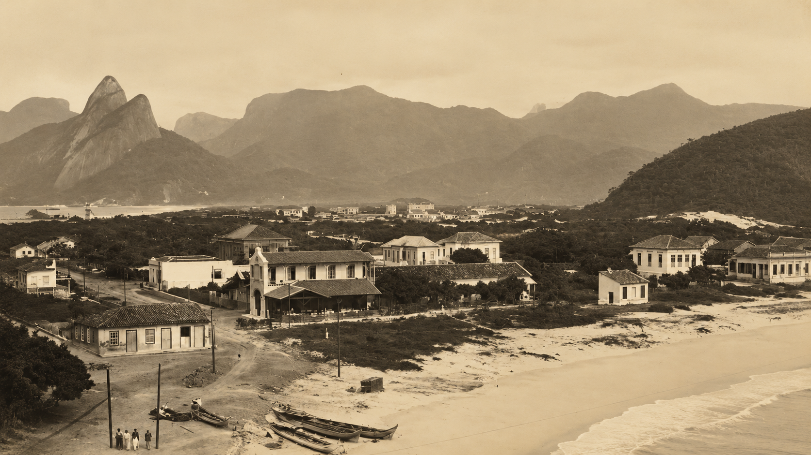

Copacabana é um dos bairros mais famosos do Rio de Janeiro e do mundo. Conhecida por sua praia extensa, seu calçadão icônico e sua vida agitada, a região atrai turistas durante o ano inteiro. Além das belas paisagens, Copacabana oferece cultura, lazer, gastronomia e uma das vistas mais bonitas da cidade.

História de Copacabana
Copacabana tem uma rica história que se estende por vários séculos. Originalmente habitada pelos indígenas tupiniquim, a região foi transformada com a chegada dos colonizadores portugueses no século XVI. Ao longo dos anos, Copacabana se desenvolveu como um importante centro comercial e residencial, atraindo moradores e visitantes com sua beleza natural e cultura vibrante.
Lugares para Visitar em Copacabana
Praia de Copacabana
Explore a beleza de Copacabana! Relaxe nas areias douradas, admire o mar cristalino e viva experiências inesquecíveis em um dos cartões-postais mais famosos do mundo. Entre paisagens incríveis, cultura e diversão, Copacabana é o destino perfeito para sua próxima aventura.
Um dos pontos turísticos mais famosos da região, o Forte de Copacabana mistura história, cultura e uma vista incrível do mar. O local possui museus militares, áreas para passeio e cafeterias com uma das paisagens mais bonitas do Rio de Janeiro.
O famoso calçadão com ondas em pedras portuguesas é um verdadeiro símbolo carioca. Caminhar pela orla de Copacabana é uma experiência única, especialmente no fim da tarde, quando o pôr do sol deixa a paisagem ainda mais bonita. O calçadão é perfeito para passeios, prática de esportes e para apreciar a vida vibrante da cidade.
Copacabana é um dos bairros mais famosos e encantadores do Rio de Janeiro, reunindo história, cultura, lazer e paisagens naturais impressionantes. Conhecida mundialmente por sua praia icônica e seu famoso calçadão, a região oferece experiências únicas para moradores e turistas. Entre o mar, a vida urbana vibrante e seus pontos turísticos históricos, Copacabana se torna um destino imperdível para quem deseja conhecer a verdadeira essência carioca.